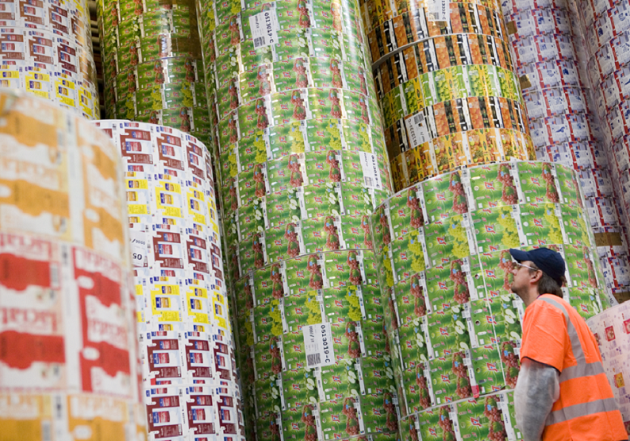
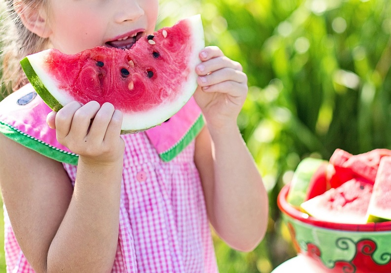
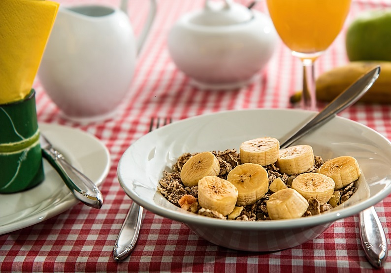
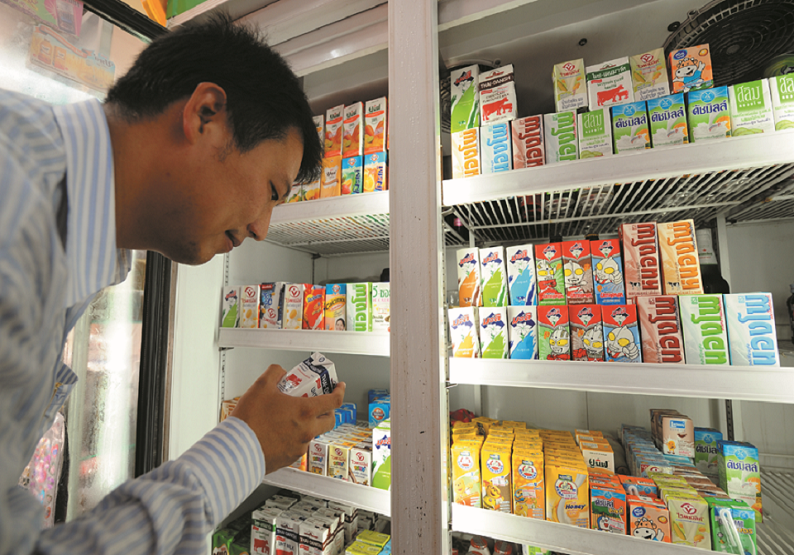
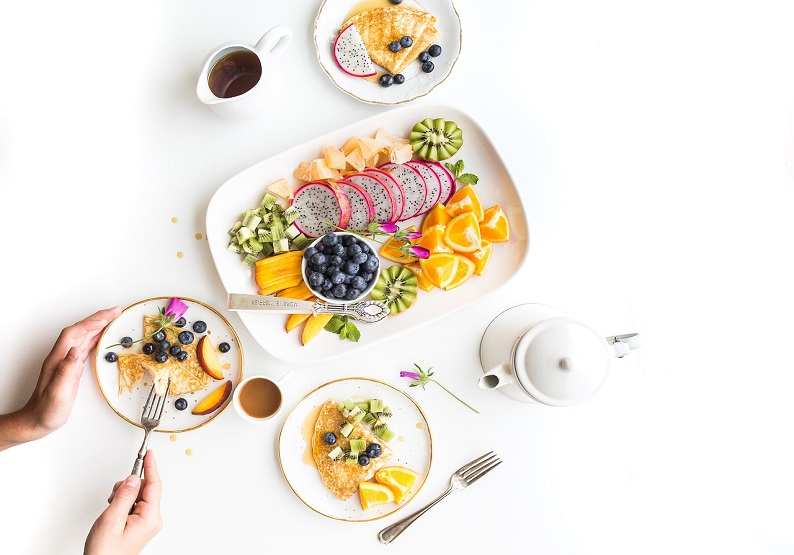

{kind=link}
{kind=link}
{kind=link}
{kind=link}
{kind=link}
{kind=link}
Sobre
Thiago TJ
Sobre o projeto
Compartilhar informações que contribuam para a tomada de decisões em busca de uma alimentação equilibrada, saudável e prática.

Alimentação, nutrição, saúde, bem-estar, tendências de consumo, receitas: esse é o universo que trazemos até você.
Segundo o Ministério da Saúde, aproximadamente 70% das pessoas consultam os rótulos nas embalagens na hora da compra e aquilo que leem tem uma influência importante na hora da decisão.
Procuramos frequentemente as informações nutricionais e os ingredientes dos alimentos e bebidas para ver se alguma coisa por ali chama a nossa atenção. 
A presença de componentes como o açúcar ou a lactose é decisiva para a escolha de colocar ou não um produto no carrinho – mesmo para aquelas pessoas que não tem nenhuma restrição alimentar.
E a quantidade por porção de outros nutrientes, como sódio ou proteínas, também.
Mais de um quarto dos brasileiros afirmou já ter mudado os hábitos de consumo para adequar os produtos a seu estilo de vida e sua preocupação com uma vida mais saudável e sustentável.
Sabemos que as primeiras impressões importam. E com as comidas isso não é diferente. Já nos apaixonamos por pratos e refeições coloridas, bem montadas e diversas, mas o verdadeiro teste acontece quando damos a primeira mordida.
Um conjunto de sensações, como o cheiro, o paladar e até o tato entram em jogo para criar a nossa percepção sobre o alimento logo que ele entra na nossa boca. 
Textura não é a mesma coisa que sensação na boca.
O que conhecemos como textura é uma propriedade física das comidas. Sorvetes são normalmente cremosos e castanhas são crocantes. Já a sensação na boca é algo mais subjetivo, que diz respeito à maneira como sentimos os alimentos e bebidas. Não é exatamente o sabor de algo, mas o que o determina, junto com o cheiro e o gosto.
Quem trabalha com degustação entende bem do assunto, mas, no dia a dia, nós também temos algumas experiências importantes com o paladar, que determinam se gostamos de uma comida ou não. Um chocolate que derrete na boca, por exemplo, é algo muito valorizado. E a quantidade de umidade que sentimos ao provar uma garfada de arroz pode ser um fator que separa muita gente.
O café da manhã está pronto. Tudo arrumado na mesa e sua vitamina de abacate com leite saindo do liquidificador, afinal, lemos que a fruta nos ajuda a perder a gordura. No primeiro gole, você abre jornal e está lá a notícia: “Consumo frequente de abacate pode aumentar colesterol, diz estudo”. E agora? No que acreditar?
São tantos os estudos nutricionais que vão a público toda semana que ficamos confusos com relação aos resultados. É para tomarmos iogurte depois dos exercícios ou não? Duas xícaras de café são suficientes para controlar a diabetes? Não é à toa que acabamos esquecendo muitas dessas pesquisas e nos focando somente naquelas que acabam trazendo as respostas que queremos ouvir. 
Mas a culpa também é um pouco nossa. Como não temos tempo para ficar acompanhando todos os estudos que saem por aí, acabamos prestando atenção nas manchetes que mais nos interessam e digerindo muita coisa sem parcimônia.
Para mudar isso, é necessária uma mudança de postura. “Nós não podemos olhar para os alimentos como medicamentos. Nenhuma cura surge da noite para o dia. São milhares de fatores que interagem para o desenvolvimento e a cura de uma doença e uma só comida ou bebida não pode prevenir ou tratar nada”, argumenta Carolina.
A alimentação deve ser considerada como apenas um dos pilares do estilo de vida. “A nossa postura com relação à saúde deve sempre ser holística. Ser saudável é comer bem, dormir bem à noite, ter momentos de lazer, se exercitar, tudo isso junto”, completa.
Normalmente, a primeira associação entre as palavras “café” e “gelado” é uma imagem negativa. Essa bebida que faz parte da vida de muitas pessoas desde a primeira refeição do dia costuma ser consumida quente.
Em 2018, segundo a Associação Brasileira da Indústria de Café, os brasileiros consumiram uma média de 839 xícaras de café. A esmagadora maioria, é claro, foi de café quente, e, nesse cenário, o café frio acaba sendo aquele restinho indesejado que sobra na garrafa térmica.
Mas o que muita gente vem descobrindo é que a diferença entre o café quente e o gelado pode ser só uma questão de preparação. As opções de bebidas cold brew, como são chamados os cafés extraídos à frio, vem ganhando o paladar do mundo todo e dos brasileiros também.
Há relatos de consumo dessas bebidas desde o século XVII, por questões de praticidade da infusão ou para refrescar em períodos muito quentes. Hoje em dia, conquistar o gosto cada vez mais diversificado dos consumidores é o maior impulso para a produção.
Mas qual é a diferença?
Diferentemente dos cafés “passados” à quente, que são filtrados no momento em que entram em contato com a água quente, a água fria não extrai os sabores e aromas da mesma maneira, por isso, o processo demora algumas horas. A extração do cold brew, com o grão de café moído embebido em água na temperatura ambiente, dura normalmente 12 horas.
As altas temperaturas fazem o pó do café liberar os componentes solúveis em maior quantidade e mais rapidamente, enquanto a preparação à frio faz com que a bebida fique menos amarga e ressalta o aroma dos grãos.
E é bom ressaltar que os cafés cold brew são diferentes de outra bebida gelada à base de café, os iced coffees. Estes últimos são extraídos normalmente com água quente e depois resfriados rapidamente para o preparo de drinks ou consumo imediato.
Gostou? Então já pode ir se preparando pra tomar um cafezinho refrescante.
Nada é para sempre, certo? Já nos acostumamos a ouvir isso a respeito de relacionamentos, que “são eternos enquanto duram”, e ninguém se arrisca a discordar quando o assunto é comida. Qualquer pessoa que já viu moscas se juntando ao redor das frutas ou sentiu o cheiro de leite estragado saber que nenhuma comida é eterna.
O que importa é que não podemos tratar nenhum alimento da mesma forma que tratamos o mel. Ninguém espera que aquelas sobras de arroz do almoço ou os legumes comprados na feira durem milênios. Nossas comidas em contato com o ambiente normalmente estragam depois de alguns dias – um sinal de que a natureza está funcionando.
Os alimentos e bebidas duram bastante tempo na prateleira, fora da refrigeração, por causa da tecnologia da embalagem. O processo de envase asséptico, que garante que não haja nenhum contato humano ou com o ambiente externo, faz o conteúdo da embalagem ser livre de bactérias. Mas, depois de aberta a caixinha, o conteúdo entra em contato com o ar e as condições mudam, dando chance aos micro-organismos se proliferarem e mudarem a composição do alimento, trazendo um risco maior de contaminação.
Então é melhor saber conservar direitinho, não é?
Confira algumas dicas para fazer seus alimentos e bebidas durarem por mais tempo! 
Sucos O ideal é aproveitar aquele almoço de família ou um lanchinho da tarde para tomar de uma vez toda a bebida que vem na caixinha. Se por acaso sobrar, o suco deve ser mantido na geladeira em sua embalagem original e é importante seguir as recomendações do fabricante no rótulo para consumir tudo em um prazo que seja seguro e mantenha as características da bebida – o que, normalmente, significa três dias depois de aberto.
Leites Quando abrimos um leite em caixinha, dificilmente tomamos o conteúdo de um litro de uma só vez. É muito comum guardarmos embalagens longa vida abertas na geladeira e não há nenhum mal nisso! O leite, depois de aberto, deve ficar guardado na geladeira, entre 1º e 10º C e consumido em até dois dias². A única preocupação que devemos ter, segundo os especialistas, é armazenar nas prateleiras de dentro e não na porta da geladeira, já que este local tem sempre uma variação de temperatura que pode acelerar o processo de deterioração.
Molhos Fez aquele macarrão no sábado, mas não usou todo o molho de tomate da caixinha? Sem problemas! Você pode guardar o molho, mas tem que tomar certos cuidados. O recomendado é sempre armazenar em potes fechados, de preferência de vidro, mas pode também ser uma louça coberta com papel filme plástico. Uma dica importante é acrescentar, por cima, uma dose de azeite sobre toda a superfície do molho, formando uma camada fina. Isso vai proteger e conservar o molho de tomate em perfeitas condições até a próxima vez que for usar.
Férias são sinônimo de diversão, mas não são motivo para descuidar da alimentação dos pequenos. Longe da rotina da escola, a tentação de apelar para itens mais calóricos e com poucos nutrientes é grande. Reunimos algumas dicas para alimentar os filhos nesse período sem abrir mão de sabor e saúde.
1) Inclua todos os grupos nutricionais Mesmo nos lanchinhos, as crianças devem comer diversos grupos de nutrientes. Uma boa combinação, por exemplo, é um sanduíche com pão integral (carboidrato) + pasta de amendoim (gordura e proteína) + um copo de leite (proteína, gordura e carboidrato).
2) Escolha bem as proteínas Alimentos com uma boa quantidade de proteínas ajudam a garantir a saciedade e fornecem o que o corpo das crianças precisa para se desenvolver adequadamente. “Castanhas, ovos cozidos ou mexidos ou preparações que contenham ovo (bolinhos ou panquecas ou pãezinhos saudáveis) são alguns exemplos”, comenta a nutricionista Clarissa Casale Doimo. 
3) Varie o sanduíche O pão integral pode ganhar novas companhias que estimulam o paladar da criança e acrescentam nutrientes ao prato. Alguns exemplos de boas combinações para ele são um fiozinho de azeite, a pasta árabe tahine, creme de ricota light, queijo minas light, geleia de frutas, alface e tomate.
4) Insira mais frutas na dieta Para facilitar o consumo de frutas, lave todas assim que chegar em casa para que elas fiquem prontas para serem degustadas. “Elas podem ser já porcionadas em quantidades adequadas e misturadas com cereais como aveia, chia e linhaça, que fazem com que a fruta picada dure mais sem escurecer”.
5) Leve de casa Para famílias que vão viajar, uma dica é preparar os lanchinhos em casa ou no hotel e oferecer durante o dia aos pequenos. Claro que não há problema em tomar um sorvete de vez em quando, mas o ideal é manter a oferta de alimentos saudáveis e nutritivos. Vale levar itens que se comportam bem fora da geladeira, como sucos e outras bebidas em embalagens cartonadas, biscoitos, frutas inteiras e torradas.
Compartilhar informações que contribuam para a tomada de decisões em busca de uma alimentação equilibrada, saudável e prática.